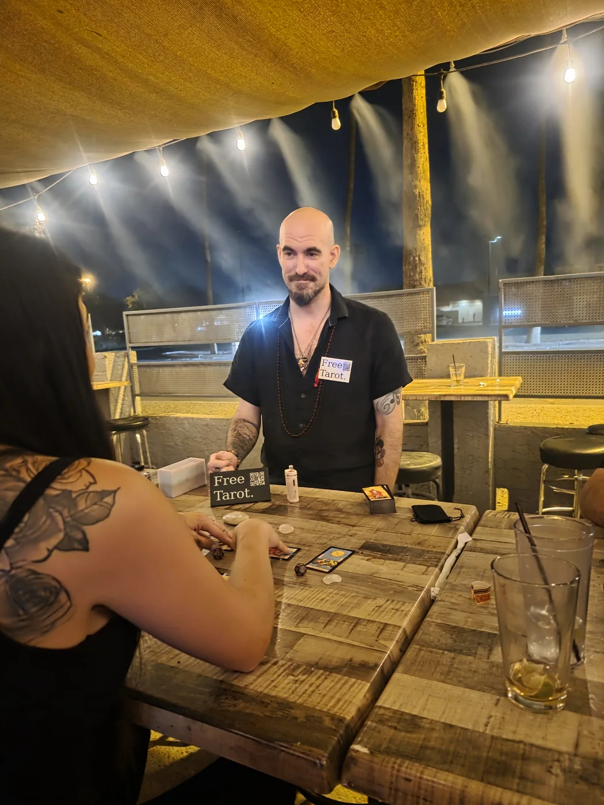

01
Community
Public & live readings
Free readings in public and on stream—spontaneous conversation across the table, supported by optional donations.
Seek the Higher Self
Insights for reflection, celebration, and the road ahead.
I offer readings and insights for private, public, and events that make room for reflection, mystery, possible futures, and the pleasure of companionship while we convene with the energy of the cosmos together.

Meet the work
Lost Opal is a spiritual space for those who seek the hidden gem within themselves.
Here, Astrology, Tarot and other esoteric tools of study become doorways to conversations with the Higher Self. Cards, numbers, stars, and symbols help you listen more closely to your own life.
I do not sell revelations; I host them.
Sessions are private, friendly, grounded, and practical. Together, you frame the question, draw with intention, reflect on the message, and leave with clear next steps you can actually use.
My role
I consider myself a servant of the Sacred Fire—the living impulse within us that reaches toward wisdom, compassion, courage, and the Higher Self. A servant of the Sacred Fire within humanity.
That service begins when you take your seat at the table.
I cannot walk your path for you, but I can listen and offer what I have learned. I am here to remind you just how beautifully bright the fire within you already burns—and to help you take another step toward mastering it.
“My goal is to be a blessing to those around me. To help each of us find the Higher Self within and without.”See ways to work with me
Ways to work with me
Free public readings, private questions, and lively gatherings each have a place here. The setting changes; the care does not.
01
Community
Free readings in public and on stream—spontaneous conversation across the table, supported by optional donations.
02
One-to-one
A focused conversation for reflection, decisions, relationships, recurring patterns, past influences, and the possibilities ahead.
03
Parties · Corporate · Festivals
Short, engaging readings for private parties, corporate events, weddings, festivals, vendor nights, and other gatherings—mystical, welcoming, and genuinely fun.
How a reading takes shape
Every reading begins with what is alive for you: love, work, family, creativity, spiritual growth, the energy of the present, or the road ahead. We begin with the real question—not with a predetermined spread.
Astrology helps us understand the larger pattern and the season moving through it. Tarot brings that pattern to the table and lets us speak with it in the present moment. Myth, number, art, and symbol may enter the conversation when they reveal another side of what we are seeing.
I do not treat these as separate tricks. They are related languages. One may lead, another may answer, and sometimes several of them describe the same truth from different directions.
The living currents
Through the Sun, Moon, Mercury, Venus, Mars, Jupiter, and Saturn, we recognize greater currents moving through the question. These planetary energies are not decorative extras; they help us study identity, instinct, communication, relationship, courage, expansion, responsibility, transformation, and return.
Tarot, Astrology, number, myth, and symbol give those energies a language we can explore together.
A living process at the table
I read patterns and possibilities, not fixed fate. I do not claim to read another person’s mind or guarantee an outcome.
Readings and services are for adults 18 and older.
Primary areas of study
Tarot, Astrology, Qaballah, number, ritual, and the divinatory arts each approach the living pattern from a different direction.
Deck families change the visual language. Hermetic, Thelemic, and Qabalistic systems change the correspondences beneath it. This browser keeps those differences visible instead of flattening everything into one generic “Tarot.”
Modern foundation
A common visual language of modern tarot—excellent for teaching, quick reference, cross-comparison, and clear story-based readings. The themed variants can help a reading connect more personally.
Modern occult foundation
A ceremonial and esoteric current whose correspondences between Tarot, Astrology, Qabalah, color, and elemental symbolism shaped much of modern occult Tarot. I use it as a system of study and connection—not as the identity of a particular deck.
Modern Thelemic foundation
Layered, precise, and uncompromising, Thoth integrates astrology, Qabalah, and alchemy. I turn to it when a question needs deeper symbolic analysis.
Modern expanded deck
The modern Minchiate deck I use expands the familiar tarot structure with zodiac signs, virtues, elements, and additional triumphs, creating a much larger symbolic field for a reading.
The Tree behind the cards
Tarot studied alongside the Tree of Life, Hebrew letters, paths, numbers, elements, and the Four Worlds. This section will call out which Qabalistic tradition is being used and keep sourced correspondences separate from my own synthesis.
Western Mystery School
Builders of the Adytum presents a structured Western Mystery School tradition grounded in Holy Qabalah and Sacred Tarot, with related study in meditation, color, Astrology, and Alchemy. It deserves its own lane rather than being folded into Golden Dawn. Official B.O.T.A. introduction ↗
Thelemic current
Ordo Templi Orientis belongs here as a Thelemic initiatory and ceremonial context centered on the discovery and accomplishment of True Will. I will keep its history and symbolism distinct from the Thoth deck rather than using the two names interchangeably. Official O.T.O. introduction ↗
Transformation
Renaissance alchemy and Hermetic philosophy meet modern clarity. This deck supports inner work and readings about purification, transformation, and rebirth.
Historic French tradition
One of tarot’s enduring historical forms. Its numbered suit cards invite intuitive pattern reading, numerology, elemental work, and a return to older traditions.
Historic Italian deck
A complete 78-card Italian deck from the late fifteenth century, known for its engraved figures, fully illustrated suit cards, and dense, unusual iconography. It belongs here as a tradition in its own right, not inside a catch-all historic category. Pinacoteca di Brera overview ↗
Early Italian courts
Visconti replicas connect a reading to fifteenth-century tarot history and some of the earliest surviving painted tarot traditions.
02 · The living sky
A birth chart is more than a list of personality traits. It is a symbolic map of the psyche: a cast of inner figures with their own needs, gifts, conflicts, alliances, and stories. Astrology helps us recognize those figures and understand the seasons that awaken them.
These are the recognizable doorways into the work. Inside a reading, natal placements, current motion, timing techniques, and the other languages at the table are woven together around the question you actually brought.
Your natal chart provides the foundation: temperament, gifts, inner tensions, repeating patterns, and the many parts of the psyche asking to be known and integrated.
Your Solar Return, natal chart, current transits, and larger planetary cycles come together to reveal the major themes, opportunities, tensions, and turning points of the year ahead.
Synastry and composite charts explore what happens when two worlds meet: where connection flows, where friction teaches, and what the relationship asks of everyone involved.
Transits, progressions, returns, and planetary cycles describe what is active now, what is developing, and where the present moment sits inside a longer story.
Electional Astrology compares possible windows for a launch, ceremony, commitment, conversation, event, or other beginning whose timing deserves thoughtful attention.
Relocation charts and locational Astrology explore how different places may emphasize parts of your natal pattern when you move, travel, or consider where to plant new roots.
03 · The architecture of correspondence
Qaballah gives the work a map of relationship. The Tree of Life connects spheres, paths, divine names, numbers, planets, elements, and the inner movement toward the Higher Self.
The ten Sephiroth offer a structure for studying consciousness, creation, balance, and the stages of the Great Work.
Letters, planets, elements, numbers, and Tarot become related languages without being flattened into the same thing.
The map becomes useful through contemplation, ethical practice, and repeated study rather than memorization alone.
04 · Number and rhythm
Numbers give another vocabulary to identity, timing, repetition, and symbolic relationship.
Birth dates and names become a starting pattern for life path, expression, motivation, and recurring lessons.
Years, months, and days can be read as nested rhythms, helping place the present moment inside a longer sequence.
Number also connects Tarot, Qaballah, Astrology, geometry, and other systems without erasing their differences.
05 · Practice made embodied
Ritual turns study into deliberate action. Prayer, meditation, timing, gesture, symbol, and repeated practice give an intention a form that can be lived rather than merely discussed.
A ritual begins with a clear reason, not theatrical fog. The form should serve the work being undertaken.
Timing, space, tools, words, and personal readiness are considered before the act itself.
Reflection afterward helps carry the insight into ordinary life, where the actual work continues.
06 · Change in motion
The I Ching reads the character of change through hexagrams and moving lines. It helps describe a moment, the direction it is taking, and the wiser posture from which to meet it.
Six lines form a complete image of a situation, built from the relationship between receptive and active forces.
Changing lines reveal pressure, transition, and the particular place where movement is occurring.
The oracle offers perspective on conduct and timing. It does not remove responsibility for the choice that follows.
08 · A voice outside structure
Each Oracle deck creates its own symbolic grammar. The work begins by listening for the voice the artist and system gave it.
Imagery, keywords, sequence, and guidebook structure reveal how a particular deck prefers to speak.
A single draw, a custom layout, or a clarifying sequence is chosen to suit the question rather than forced into one template.
Oracle work can stand alone or add another voice beside Tarot, Astrology, and the other tools at the table.
09 · A direct card language
Lenormand is not Tarot in miniature. Its concise symbols become sentences through proximity, combination, direction, and house.
Cards modify one another, building direct statements and chains of meaning across a short reading.
A card’s position adds a second layer, allowing the symbol drawn and the place it occupies to speak together.
The full deck becomes a relational map for themes, people, movement, distance, and developing circumstances.
07 · Symbol and sound
Runes are first an alphabet with history, sound, and cultural context. Reflective casting grows from that foundation.
Names, sounds, historical uses, and surviving sources come before modern divinatory associations.
Shape, sound, poetry, and later interpretive traditions are compared without pretending they all came from one source.
Single runes, small patterns, and open casts create different ways to observe emphasis, relationship, and movement.
10 · Pattern in the scatter
A cast becomes a field of relationships. Meaning appears through the pieces themselves and through the way they land together.
Each object earns a clear role through material, origin, personal history, and the vocabulary of the set.
Placement, orientation, distance, clusters, crossings, and empty space all contribute to the reading.
Materials should be obtained lawfully and respectfully, with their origin understood rather than treated as mere atmosphere.
Explore further
The Library will be the academic heart of Lost Opal: a learning center for Tarot, Astrology, symbolism, stones, books, and other esoteric studies.
The Shop gathers decks, books, tools, and materials connected to understanding the Magnum Opus or our Great Work.
When you are ready…
A simple first step
Have a question about a reading, an event, or where to begin? Send a short note.
In personGreater Phoenix Area, Arizona, USA
Available nationallyContact for details!